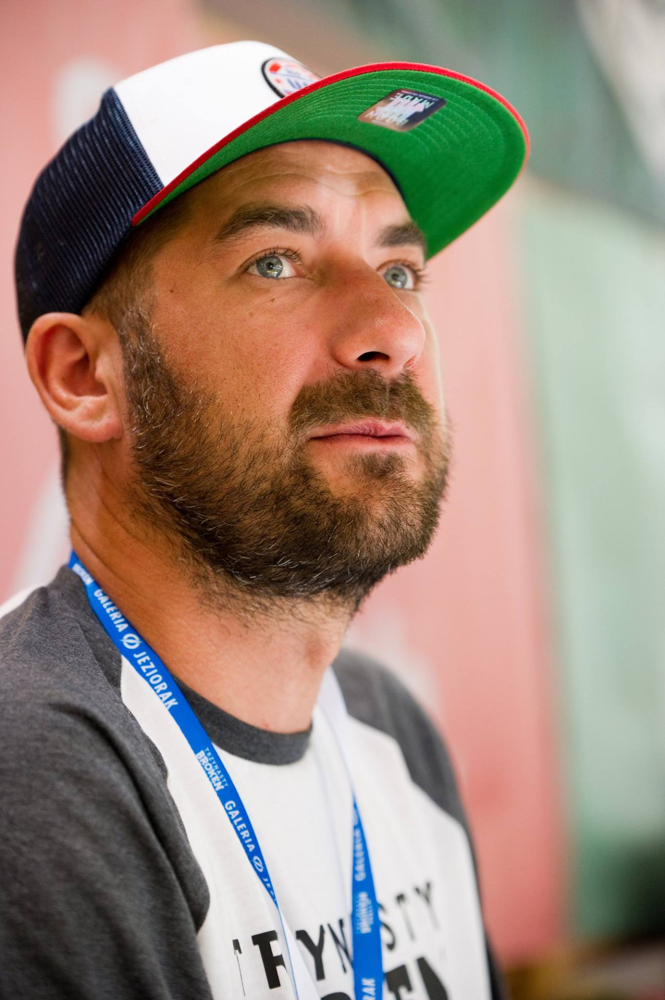

SPORT
Rywalizacja zawsze była sercem wydarzenia. To na boisku zaczęła się historia Broken Ball.
OD POMYSŁU DO MARKI
Broken Ball wyrósł z potrzeby zrobienia w Iławie czegoś własnego, prawdziwego i większego niż zwykły turniej.
POCZĄTEK
Zaczęło się skromnie, w jednym z mieszkań współtwórcy turnieju, Tomasza. Kilka osób, głowy pełne pomysłów i przekonanie, że Iława zasługuje na coś więcej niż zwykły turniej koszykówki.
Z tego pomysłu narodził się Broken Ball. Początkowo wydarzenie było spontaniczne i surowe, ale od pierwszej edycji napędzała je pasja. Z czasem przyjeżdżali coraz lepsi zawodnicy, rosła publiczność, a do koszykówki dołączały kolejne elementy kultury ulicznej.

TOŻSAMOŚĆ BB
Rywalizacja zawsze była sercem wydarzenia. To na boisku zaczęła się historia Broken Ball.
Hip-hop, koncerty i DJ-e zbudowały charakter weekendu i połączyły sport z miejską kulturą.
Graffiti, skatepark, taniec i sztuka uliczna sprawiły, że wydarzenie wyszło daleko poza halę.
Zawodnicy, publiczność, partnerzy i ekipa organizacyjna tworzą markę, która żyje przez cały rok.
„To, co kiedyś było lokalnym przedsięwzięciem, dziś jest synonimem dobrej energii, sportowej rywalizacji i niepowtarzalnego klimatu.”
KOLEJNY ROZDZIAŁ
Broken Ball to dziś coś więcej niż impreza. To żywa tradycja, która zmienia się razem z miastem i kolejnymi pokoleniami uczestników. Wszystko zaczęło się od jednego mieszkania, jednego pomysłu i grupy ludzi, którzy postanowili zrobić coś wyjątkowego.